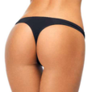

Dr Vasileios Pagkalos, MD, MSc, PhD Plastic Surgeon
Name: Vasileios Pagkalos, MD, MSc, PhD
Last name: Pagkalos
Gender: male
Began aesthetic medicine in: 2004
Years experience: 19
Primary Specialty: Plastic Surgeon
Website: https://drpagkalos.com/index.html
Business: Dr Pagkalos Plastic Surgery
Address: Kyriazi 40
Address suite: Kifissias Tower
Phone: +30 21 1800 4003
X (Twitter): https://twitter.com/DrPagkalos
City: Kifissia
State: Attiki
Zip Code: 14562
Country: GR
Statement: Dr Pagkalos is a Board Certified Plastic Surgeon who specialises in Cosmetic Plastic Surgery.
He received a full Plastic and Reconstructive surgery training in Soroka University MC, Ben Gurion University, Israel and he completed the full-Cosmetic Plastic Surgery-Fellowship in Akademikliniken, Stockholm.
Dr Pagkalos’ attention to detail, his academic background and use of the latest surgical and non-surgical techniques provide his patients with natural and aesthetically pleasing results.
He received a full Plastic and Reconstructive surgery training in Soroka University MC, Ben Gurion University, Israel and he completed the full-Cosmetic Plastic Surgery-Fellowship in Akademikliniken, Stockholm.
Dr Pagkalos’ attention to detail, his academic background and use of the latest surgical and non-surgical techniques provide his patients with natural and aesthetically pleasing results.
Consulting Fees: 100$
Consultation note: Before booking an appointment please note that the waiting list for non-surgical procedures is usually 2 weeks and for surgery 2-3 months.
Has Sponsored Offer : No
Clinical Privileges:
- Athens Medical Center, Athens, Greece, Ygeia Hospital, Athens, Greece, Soroka University Medical Center, Israel, Akademikliniken, Stockholm, Sweden
Education:
- Medical: MD, School of Medicine, University of Crete, Greece
- Graduate:
- MSc, UOP – Patras, Greece
- PhD, School of Medicine, University of Crete, Greece
- Senior Research Consultant, Research and Development in Plastic Surgery, Ben-Gurion University, Israel
Postdoc Training:
- Residencies:
- General Surgery, Army’s Veteran Hospital, Athens, Greece
- Plastic Surgery, Soroka University Medical Center, Ben-Gurion University, Israel
- Fellowships:
- Cosmetic Plastic Surgery, Akademikliniken, Stockholm, Sweden
- Hand Surgery, Soroka University MC, Israel
- Cleft Lip and Palate Surgery, Soroka University MC, Israel
- Mohs Surgery, Soroka University MC, Ben Gurion University, Israel
GPS coordinates on map: 38.0718405,23.8138087
Primary location:
Location name: Greece
Country: GR
Map point: 39,22
Google plus: https://plus.google.com/+DrPagkalosPlast
Treatments:
- Abdominal Etching
- Aqualyx
- Arm Lift
- Asian Rhinoplasty
- Back Lift
- Belly Button Surgery
- Belotero
- Blue Peel
- Body Lift
- BodyTite
- Botox
- Botox for Gummy Smile
- Botox for Hyperhidrosis
- Brazilian Butt Lift
- Brazilian Butt Lift Revision
- Breast Augmentation
- Breast Fat Transfer
- Breast Implant Removal
- Breast Implant Revision
- Breast Implants
- Breast Lift
- Breast Lift with Implants
- Breast Reconstruction
- Breast Reduction
- Buccal Fat Removal
- Butt Augmentation
- Butt Implant Removal
- Butt Implants
- Butt Lift
- Calf Reduction
- Capsular Contracture Treatment
- Cellfina
- Cellulaze
- Cheek Augmentation
- Cheek Lift
- Chemical Peel
- Chin Implant
- Chin Liposuction
- Cleft Lip And Palate Repair
- CO2 Laser
- Contour Thread Lift
- CoolSculpting
- Cyst Removal
- Deep Plane Facelift
- Dermabrasion
- Dermal Fillers
- Dermapen
- Double Eyelid Surgery
- Drainless Tummy Tuck
- Dysport
- Ear Surgery
- Earlobe Repair
- Ellanse
- Eyelid Surgery
- Facelift
- Facelift Revision
- Facial Fat Transfer
- Fractional Laser
- Fraxel Laser
- GalaFLEX
- Genioplasty
- GentleLase
- Gynecomastia Surgery
- Hand Rejuvenation
- Hip Augmentation
- Hyaluronidase
- Inverted Nipple Surgery
- Jessner Peel
- Juvederm
- Kybella
- Labiaplasty
- Laser Liposuction
- Latisse
- Lip Fillers
- Lip Lift
- Lip Surgery
- Lip Threading
- Lipoma Removal
- Liposculpture
- Liposuction
- Liposuction Revision
- Liquid Facelift
- Lower Facelift
- Macrolane
- MACS Facelift
- Male Tummy Tuck
- Mentor Breast Implants
- Mesotherapy
- Microneedling
- Mini Facelift
- Mini Tummy Tuck
- Mohs Surgery
- Mole Removal
- Mommy Makeover
- Neck Lift
- Nipple Reduction
- Nipple Surgery
- Nonsurgical Facelift
- Nonsurgical Neck Lift
- Nonsurgical Nose Job
- Profhilo
- PRP for Hair Loss
- PRP Injections
- Pulsed Dye Laser
- Radiesse
- Renuvion
- Restylane
- Restylane Defyne
- Restylane Kysse
- Restylane Lyft
- Restylane Refyne
- Restylane Silk
- Revision Rhinoplasty
- Rhinoplasty
- Sclerotherapy
- Silhouette InstaLift
- Silhouette Soft
- Skin Rejuvenation
- Skin Tightening
- SMAS Facelift
- Thigh Lift
- Thread Lift
- Tumescent Liposuction
- Tummy Tuck
- Tummy Tuck Revision
- Ultherapy
- Vampire Facelift
- Vaser Liposuction
- Vbeam
- Volbella
- Voluma
- Xeomin
- YAG Laser
RealSelf Info
Awards:
- Leading Physician of The World , Top Plastic Surgeon, International Association of Healthcare Profesionals, NY, USA
- Find_A_Top_Doc.com, 2017, 2018, 2019, 2020
- Reconstructive Plastic Surgery Award, Israeli Association of Plastic Surgeons, Tel Aviv, Israel
- Athens Academy Award
- Professional Recognition:
- Senior Research Consultant, Research and Development in Plastic Surgery, Ben-Gurion University, Israel
Profile views: 1228
Answer count: 17
Star rating: 2.0473720558371
Lead count last three months: 1
Profile created: Jul 20, 2017
Profile modified: Oct 2, 2023
Profile promotion: No
Profile inactive: No
Premier status: Profile Plus
Tier: Free-Claimed
RealCare Promise: No
Directory link: Plastic Surgeon
RealSelf’s PRO: Yes
Doctor Designation Start Time: Aug 7, 2017
Doctor Designation End Time: Jan 1, 2033
Locations
- Greece, GR. GPS coordinates: 39,22
Practice Locations
Name & Website
Beauty Project Medical, https://beautyproject.me
Address
Kyriazi 40, Kifissia, GR, 14562 (GPS coordinates: 38.0718405,23.8138087)
Phone
+302118003003
Working Hours
Created / Modified
Nov 30, 2020 / Feb 1, 2022
Doctor’s answers
Question
Answer Header & Date
Answer Snippet
Will getting fat transfer in addition to a breast lift via BodyTite add more volume? (
Breast lift plus fat in fibrocystic breasts
Oct 21, 2021
Oct 21, 2021
Hi, thank you for your question. Fat transfer should definitely improve the shape of your breasts. However, since you have fibrocystic breasts that, according to your description, have large cysts inside the breast parenchyma, I would suggest you should consult with your breast doctor about BodyTide and fat transfer because these procedures could compromise your follow up imagine diagnostics.
I am considering Coolsculpting under my chin. After an accident I have a large amount
Coolsculpting and metal pins
Oct 14, 2021
Oct 14, 2021
Hello, thank you for your question. Coolsculpting doesn’t produce an electromagnetic field at the site of treatment and therefore should be safe to use near metal pins. However if the area treated is in close proximity to the metal pins you mentioned, the suction applied may force some of the metal pins to move from their original position. To be on the safe side, I would suggest not to proceed with coolsculpting in the area because only the doctor who initially put the metal pins would know…
How soon after PDO Threads can I get Botox?
Botox & PDO
Oct 7, 2021
Oct 7, 2021
Hello, thank you for your question.Yes you can do botox now. PDO threads will be creating connective tissue for the upcoming 3 months, softening the crows feet. Botox will minimise the contraction of the muscle providing a better environment for the threads to work.
What can I do to have a more attractive/feminine face?
Feminine face
Sep 30, 2021
Sep 30, 2021
Hi, thank you for your question. Generally speaking an attractive feminine face has more volume in the mid face, less in the jawline and we overall aim at balanced proportions. From what I see in your pictures you are have a nice bone structure to start with. I would suggest that you add some volume (fillers) in your cheekbones to balance your buccal fat, treat your tear draft with hyaluronic acid to remove the fatigue from your eyes, enhance your upper lip (hyaluronic acid), add some volume…
Is it safe to have a drainless tummy tuck, lipo360, BBL, mastoplexy with silicone impl
Multiple ops safety
Sep 29, 2021
Sep 29, 2021
Hi, thank you for your question.Each one of these procedures is considered to be major. Your main issue would be fluid equilibrium and pain during recover. I would consider performing all these procedures on the same day only if the amount of fat to be removed is less than 3 litters and the tummy tuck is minimal. Be prepared to have a difficult recovery period and arrange to have people around to assist you with your everyday needs.
Do you recommend drainless tummy tuck?
Drainless tummy tuck
Sep 29, 2021
Sep 29, 2021
Hello, Thank you for your question. Drains are one of the major causes of discomfort during recovery from tummy tuck. In order to make recovery easier, plastic surgeons have introduced the drainless tummy tuck which consists of a combination of: bleeding control, seroma reducing techniques and anchoring of the flaps to minimise dead space. Nowadays drainless tummy tuck is the becoming standard of care, however certain conditions may still opt to the usage of drains. The risk involved is…
Is there any way to get rid of deep wrinkles and crepey skin on arms?
Arm lift vs no surgical treatments
Sep 29, 2021
Sep 29, 2021
Hi, thank you for your question.Arm lift is the gold standard when it comes to tightening the skin. However, since you have sun damage, it is this sun-damaged skin that you are pulling when performing the arm lift. A combination of treatments will give you the optimal results. Based on your description, I would suggest to do an arm lift and after 6 months to treat the skin with sculptra or radiesse to get a much youthful look (that will also help you in the area of forearm where arm lift…
Latest Before And After Photos
- Dr Vasileios Pagkalos, MD, MSc, PhD, Kifissia, Attiki 28 Year Old Man Treated With Nose Job Procedure Image
- 31 Year Old Man Treated With Chin Implant Photo By Dr Pagkalos, Kifissia, Attiki
- 58 Year Old Ms. Treated With Cosmetic Face Lift Picture With Dr Pagkalos, Kifissia, Attiki (14562 )
Last updated on 12/05/2023